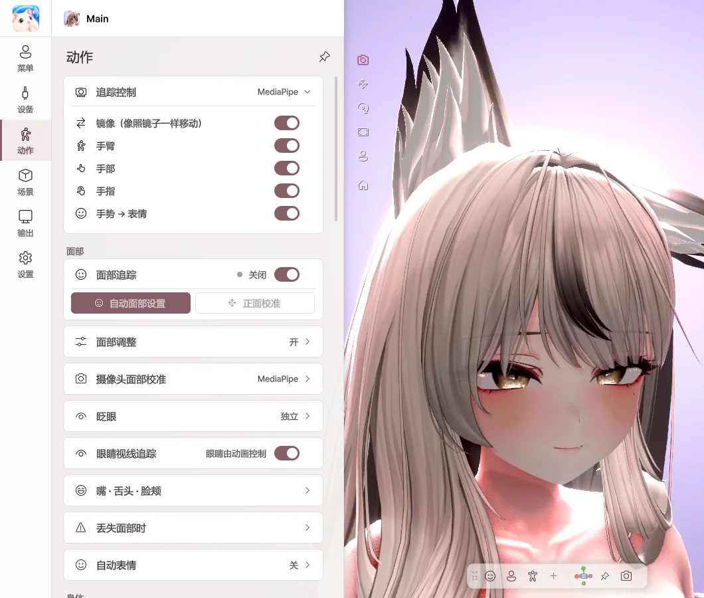
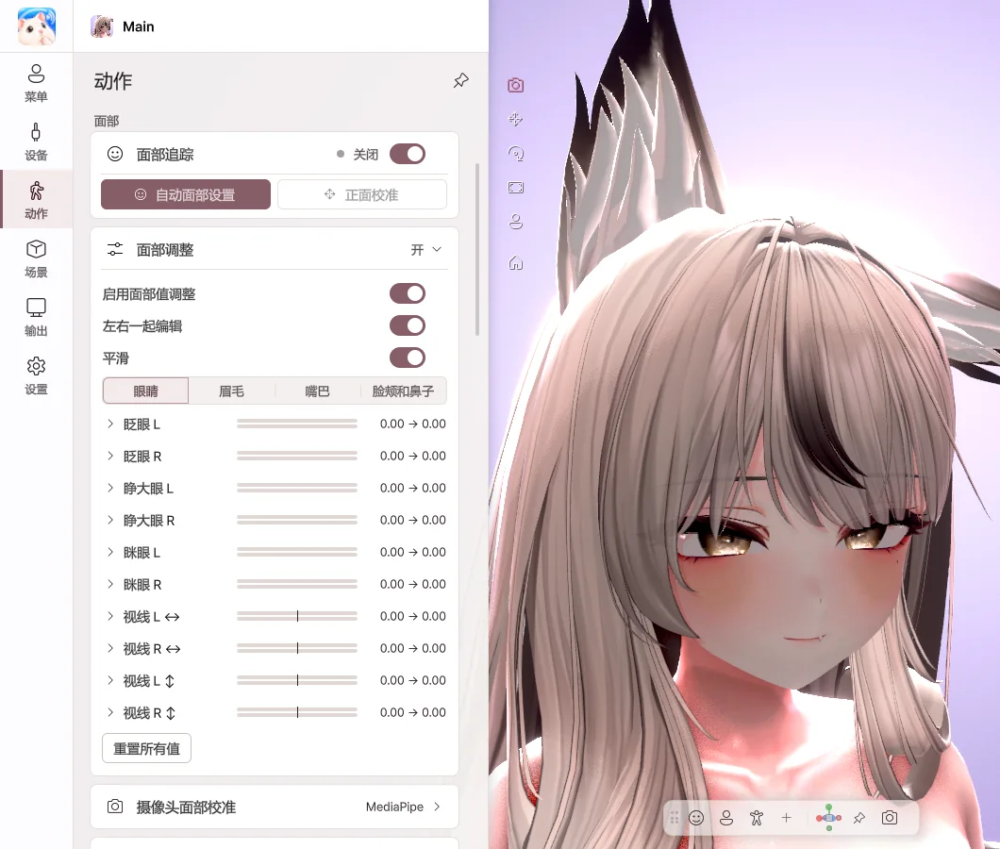
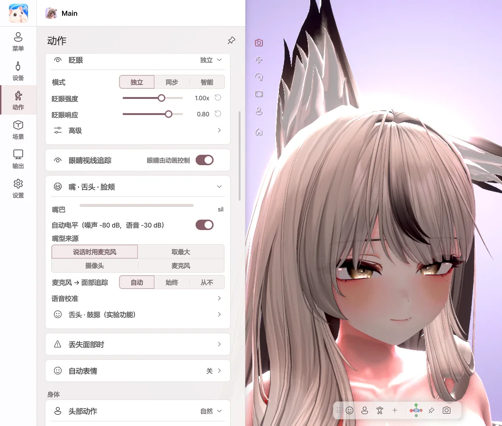
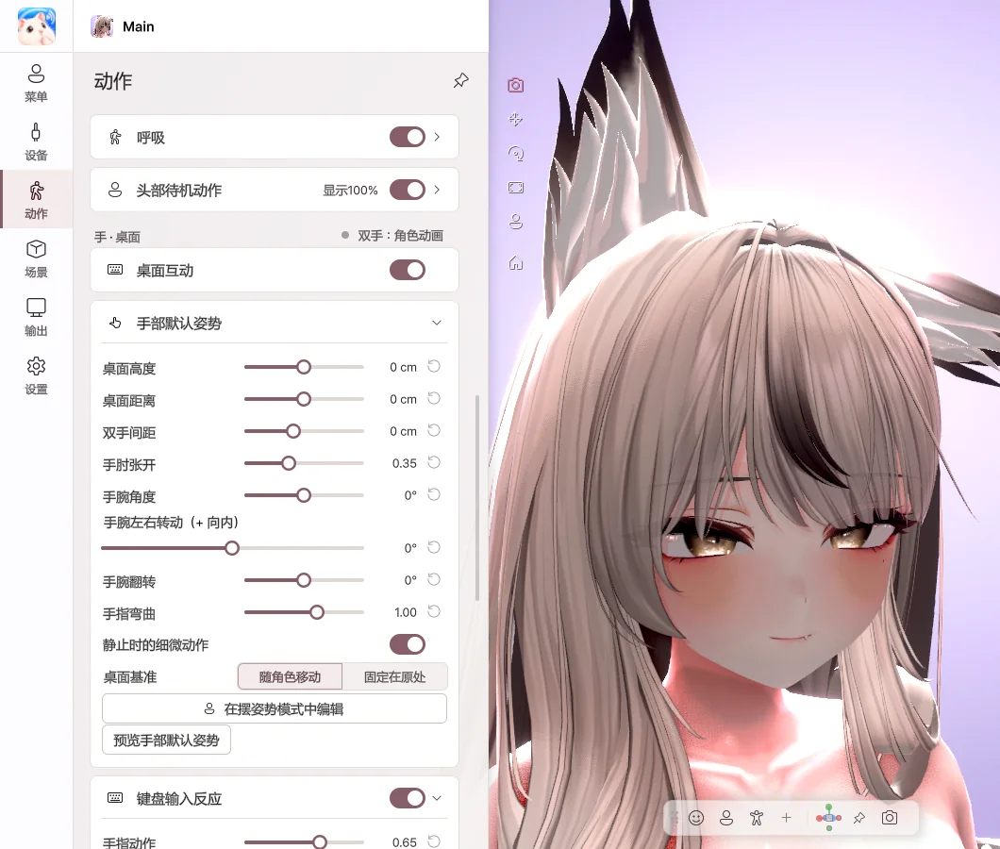

7. 动作
设定面部、身体和手的运动方式。设置按角色分别保存。
面部追踪

- 镜像 — 像照镜子一样朝同一侧移动。
- 手臂 · 手部 · 手指 — 用摄像头驱动各个部位。
- 手势 → 表情 — 角色的表情会随手形变化。
- 面部追踪 — 开启或关闭面部表情追踪。
表情的驱动方式
面部表情 完全按照角色中已有的设置来驱动。 Avatar Live 不会为角色新建或转换表情。
| 角色设置 | 驱动方式 |
|---|---|
| 有 VRCFaceTracking（VRCFT） 参数 | 通过角色的 VRCFT 设置驱动。 |
| 有 52 个 ARKit 形态键（Perfect Sync） | 直接驱动这些形态键。 |
| 两者都没有 | 以眨眼、口型同步等角色自带的基本表情为主，细腻的表情可能无法呈现。 |
- 即使摄像头或 iPhone 以 52 个表情为单位读取，角色中没有对应参数或形态键的表情也不会显示。
- 如果角色只有部分形态键，则只驱动已有的部分。
今后计划改进为：识别全部 52 个表情并对应到角色上，或者让没有这些设置的角色也能直接绑定到面部。时间可能会有变动。
自动面部设置

点击 自动面部设置 按钮即开始校准。请按照画面引导做出表情，然后点击 测量。最后点击 应用，表情就会按照你的面部进行调整。
第一步中注视的位置会成为角色的正面视线。请像直播时一样看着屏幕。
面部调整

- 逐项调整眼睛、眉毛、嘴、脸颊表情的幅度。
- 将滑块向右拖动，该表情的幅度就会更大。
- 开启 左右一起编辑 后，两侧会一起变化。
- 开启 平滑 后，可减少表情抖动。
眨眼 · 嘴巴

- 眨眼模式 — 独立 便于眨单眼，同步 则让双眼一起闭合。
- 眼睛视线追踪 — 眼球会跟随你的视线。
- 自动电平 — 根据声音大小自动调整嘴巴张合的幅度。
- 语音校准 — 点击元音按钮并发音，即可匹配你的声音。
- 舌头 · 鼓腮 — 用按钮或快捷键伸出舌头或鼓起脸颊。
身体

- 头部动作 — 从 轻微 · 自然 · 夸张 中选择。
- 身体跟随 — 转动头部时，身体也会自然地跟随。
- 自然的身体动作 · 呼吸 — 即使静止不动，也会像活着一样动起来。
- 上半身 — 开启摄像头全身后，会根据肩部动作让上半身倾斜和转动。在看不到腿部的桌前也可以使用。
- 全身 — 用摄像头或 VMC 跟随躯干、腿部以及坐下 · 站立。请参考 设备 › 全身 · 手指关节。
手 · 桌面

- 桌面互动 — 摄像头看不到手时，角色的手会配合键盘和鼠标操作而动。
- 手部默认姿势 — 调整桌面高度、双手间距和手腕角度。
- 键盘 · 鼠标输入反应 — 设定打字和鼠标动作的幅度。
- 放下手后会立即进入桌面姿势，再次抬起时会平滑地回到追踪。即使身体大幅摇晃或处于坐姿，手肘也会自然地跟随。
- 在摆姿势中制作的手臂 · 手部姿势，可以通过 设为桌面姿势 来使用（Pro）。
键盘输入仅用于驱动角色的手，不会保存或发送输入的文字。
💡 舌头 · 鼓腮的摄像头检测是实验性功能。